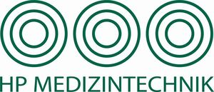

Trade Mark Journal No.2025/025 20 June 2025
WO0000001837886 (9,10,11,42,44)
Office of origin: Germany
Date of International Registration:29 August 2024
Date of designation in the UK:
29 August 2024

The mark contains the colour green.
International priority date claimed: 6 March 2024
(Germany)
- Class 9
- Fermentation apparatus [laboratory equipment]; distillation flasks [laboratory equipment]; laboratory equipment and instruments; laboratory equipment for analysing genetic information; laboratory equipment for detecting genetic sequences; laboratory equipment for analysing protein sequences; sterile sample bags for laboratory use; electronic equipment for checking the sterility of medical equipment; electronic devices for checking the sterility of pharmaceutical preparations and injectable solutions; petrochemical analysers; data processing equipment; artificial intelligence software for performing analyses; scientific and laboratory equipment for physical reactions using electricity.
- Class 10
- Medical equipment for dental hygienists; MRI equipment for diagnostic purposes; laboratory equipment for diluting liquids [for medical purposes]; laboratory equipment for administering liquids [for medical purposes]; laboratory equipment for mixing liquids [for medical purposes]; laboratory equipment for incubating liquids [for medical purposes]; medical analysers; bacterial identification analysers for medical use; electromagnetic medical equipment; electronic medical analysers; electronic medical equipment; medical analysers; haematology analysers; immunological analysers; gas analysers for medical use; physical analysers for medical purposes; pulse counters [medical devices]; chromatographic apparatus for medical purposes; electromagnetic field generating apparatus for use in medical diagnosis; magnetic field generating apparatus for use in medical diagnosis; ultrasonic field generating apparatus for medical diagnosis; retractors [medical appliances]; appliances for veterinary use; lamps for use with medical appliances; medical appliances; dental appliances; subcutaneous analysing instruments; electromagnetic field generating apparatus for use in medical treatment; magnetic field generating apparatus for medical treatment; ultrasonic field generating apparatus for medical treatment; dental appliances; medical and veterinary appliances and instruments.
- Class 11
- Chemical sterilisation equipment [water treatment equipment]; ultraviolet sterilisation equipment [water treatment equipment]; ultraviolet sterilisation equipment for industrial water; UV sterilisers; water sterilisers; cartridge filtration equipment [water treatment equipment]; reverse osmosis filtration equipment [water treatment equipment]; waste water treatment equipment [purification]; transportable equipment for waste water treatment; equipment for filtering water; equipment for desalination of water by reverse osmosis; water desalination equipment; equipment for chlorination for water treatment; sterilising autoclaves; autoclaves, not for medical purposes; electric autoclaves for sterilisation purposes; autoclave for sterilisation for medical purposes; sterilising equipment; transportable steam sterilisers; steam sterilisers; steam sterilisers for domestic use; steam sterilisers for laboratory use; steam sterilisers for industrial use; steam sterilisers for medical use; rotary valves [sterilisers]; rotary valves [sterilisers] for use in hospitals; sterilisers; sterilisers [not for medical use]; sterilisers for household use; sterilisers for laboratory use; sterilisers for industrial use; sterilisers for medical instruments; sterilisers for medical use; transportable steam sterilisers; disposable sterilising bags; pressure vessels for sterilisation; sterilising apparatus for dental instruments; sterilising apparatus for surgical instruments; sterilising apparatus for medical purposes; water purification, desalination and treatment equipment; sterilising, disinfecting and decontaminating installations and equipment; sterilising apparatus for medical instruments; steam generators for household purposes; autoclaves for medical use.
- Class 42
- Engineering analyses; biological analyses; bacteriological analyses; scientific analyses; chemical analyses; chemical research and analysis; analysis services for the determination of chemical substances in liquids; analysis services for the determination of bacterial content in liquids; analysis services for the determination of chemical substances in liquids; analysis services for the determination of bacterial content in liquids; analysis services for the determination of bacterial content in liquids; analysis services for the determination of chemical substances in liquids; analysis services for the determination of bacterial content in liquids; preparation of biological samples for testing and analysis in research laboratories; reparation of biological samples for analysis in research laboratories; calibration of medical equipment; industrial analysis services; design and development of medical technology; calibration of electronic equipment; calibration of analytical equipment; computer-aided industrial analysis services; industrial analysis and research services; provision of information on industrial analysis and research; rental of scientific and technological equipment; design and development of medical diagnostic equipment; design and development of diagnostic equipment; design of medical equipment; design and development of computer software for medical technology; inspection of equipment; testing of equipment; testing, analysis and evaluation of goods and services of third parties for certification purposes; testing services for quality control of industrial equipment.
- Class 44
- Rental of apparatus and equipment in the field of medical technology; rental of medical equipment; rental of devices and equipment for the healthcare of people.
HP Medizintechnik GmbH
Representative: WAGNER & GEYER Partnershaft mbB, Patent-und Rechtsanwaelte, Lytchett House, 13 Freeland Park, Wareham Road, Poole D-BH16 6FH Dorset GERMANY